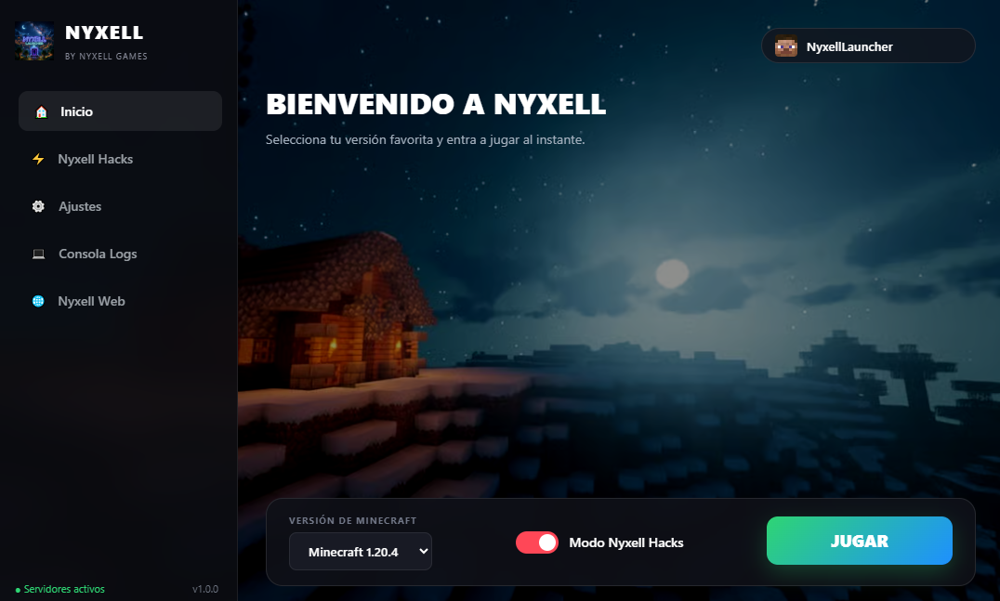

Nyxell Launcher
El launcher definitivo para Windows no premium
Con hacks incluidos (meteor)
¿Qué es?
Nyxell Launcher es una plataforma optimizada de alto rendimiento diseñada para ofrecer la experiencia de juego definitiva en Minecraft para Windows. Integra herramientas avanzadas, gestión automática de Java, optimización de memoria RAM y clientes de rendimiento prediseñados.

¿Por qué confiar en nosotros?
Código abierto
Transparencia total en nuestro desarrollo para garantizar la seguridad de todos los usuarios.
Transparencia
Sin procesos ocultos ni consumo excesivo de recursos en segundo plano.
Rendimiento Extremo
Optimizado con parámetros de Java específicos para maximizar los FPS.
Sin Software Malicioso
Instalador limpio verificado constantemente para la protección del sistema.
Actualizaciones Automáticas
Nuevas funciones y optimizaciones entregadas directamente al instante.
Soporte Dedicado
Un equipo enfocado en resolver errores y mejorar la estabilidad del cliente.